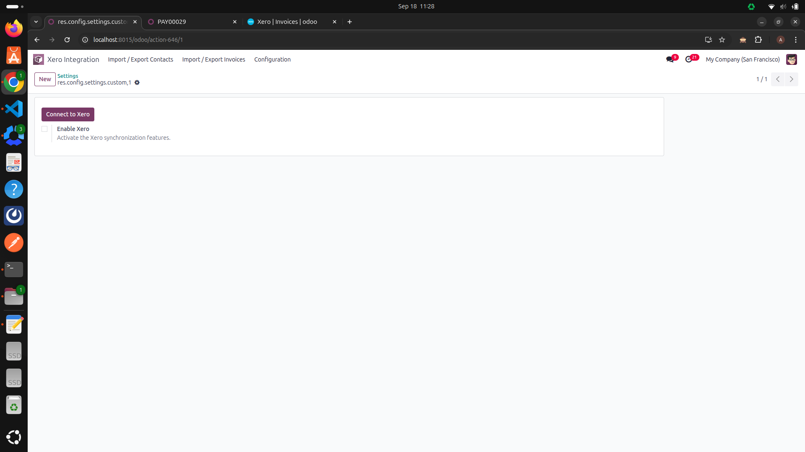
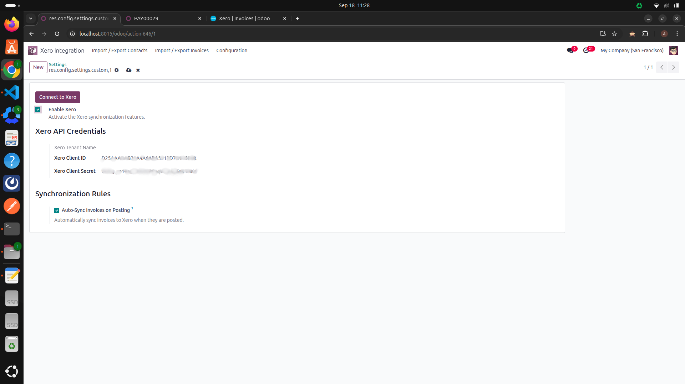
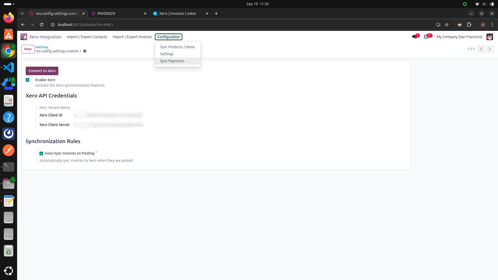
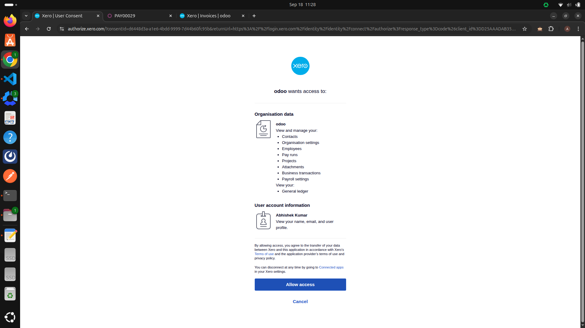
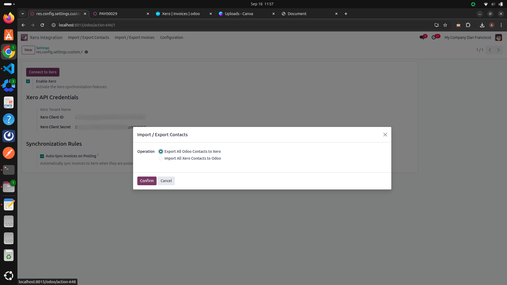
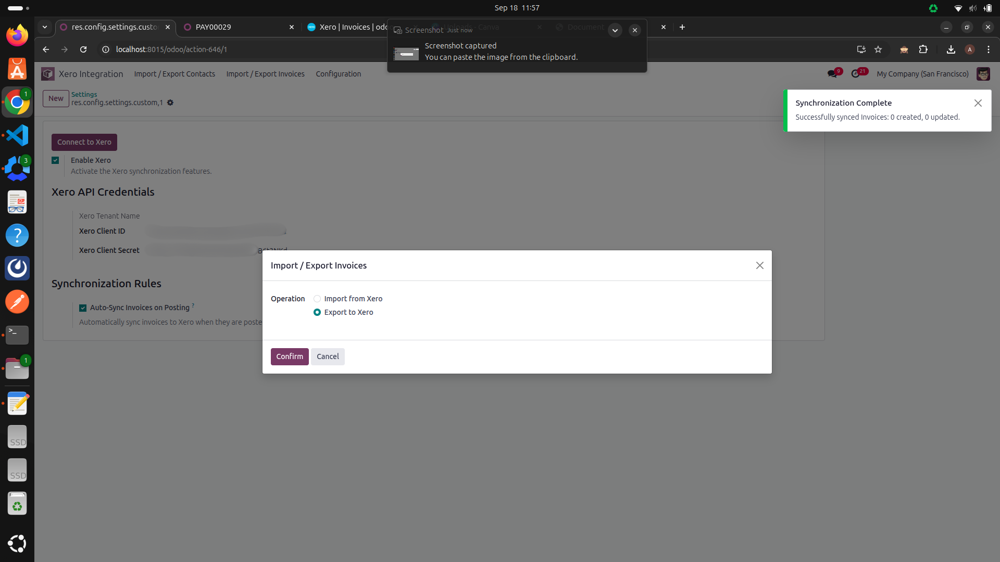

Odoo-Xero Integration Connector
This module provides a powerful and straightforward connection between your Odoo database and your Xero accounting software. By synchronizing key financial data, it eliminates the need for manual data entry, reduces errors, and ensures your accounting records are consistent across both platforms.
Keep your sales and accounting teams perfectly in sync.
Key Features
Contact Synchronization: Automatically create or update a contact in Xero whenever a new customer is created in Odoo.
Invoice Synchronization: Export customer invoices from Odoo to Xero seamlessly. The module ensures that once an invoice is validated in Odoo, it appears in Xero with the correct details, ready for reconciliation.
Payment Synchronization: When a payment is registered in Odoo and reconciled against an invoice, that payment is automatically created in Xero and applied to the corresponding invoice. This keeps your invoice statuses up-to-date in both systems.
Setup and Configuration
Before you can sync data, you must connect Odoo to your Xero account.
1. Install the Module: First, install the "Odoo-Xero Integration Connector" from your Apps list.
2. Enter Xero API Credentials:
Navigate to Invoicing > Configuration > Settings > Xero Integration.
You will need to enter the Client ID and Client Secret from your
Xero Developer application. You can create an app on the Xero Developer Portal. Click
Connect to Xero and follow the prompts to authorize the connection.
How to use Steps -
-
Step 1: Enable Xero
Navigate to the settings and activate the main Xero synchronization feature to begin the setup process.

-
Step 2: Add Credentials
Enter your unique Client ID and Client Secret obtained from your Xero Developer application.

-
Step 3: Connect to Xero
Click the 'Connect' button. This will securely redirect you to the official Xero website to authorize the connection.

-
Step 4: Configure Synchronization Rules
Set your preferences for automatic syncing. For example, enable 'Auto-Sync Invoices on Posting' to send invoices to Xero as soon as they are validated.
-
Step 5: Allow Access on Xero
On the Xero authorization page, review the requested permissions and click the 'Allow access' button to grant Odoo permission to sync data.

-
Step 6: Redirect Back to Odoo
After successfully authorizing, you will be automatically redirected back to your Odoo settings page.
-
Step 7: Use Import & Export Menus
You will now see new 'Xero' menus in your Invoicing app. Click on a menu, like 'Import Contacts', to open a wizard with buttons to start the process.

-
Step 8: Confirm Successful Sync
Follow the same steps for invoices or other records. After a successful operation, a confirmation notification will appear.

-
Step 9: Access Advanced Configuration
Find advanced settings for payments, products, and default accounts under the 'Configuration' menu in the Invoicing app.
-
Step 10: go to in xero
Find invoice state and payment staus and due